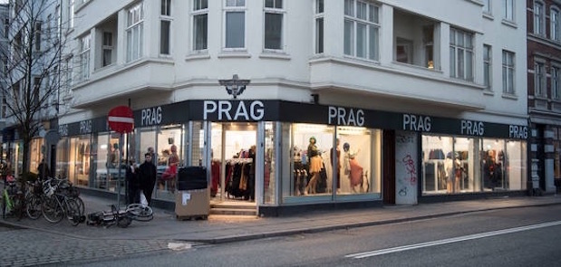
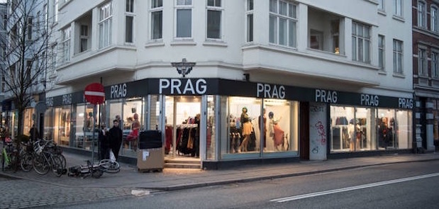

5 Gode råd
1
Sørg for, at du har god tid!
Når man går på genbrugsjagt, ved man ikke nødvendigvis altid, hvad man går efter, og selv hvis man gør, kan det tage tid at finde lige præcis det, som man leder efter. Derfor er det vigtigt, at du har god tid til at vende og dreje alle ting, du finder interessant, for det kunne jo være, at det lige var det din garderobe eller dit værelse stod og manglede!
2
Døm ikke genbrugsbutikken på dens udseende!
Mange gange er genbrugsbutikkerne gamle og måske ikke synligt indbydende! Men det betyder ikke, at de ikke kan indeholde fantastiske fund. Faktisk er det ofte her, du finder de billigste ting og virkelig har en chancen for at gøre et kup!
3
Vær kreativ!
Nogle gange kræver det et skarpt og kreativt øje for at se værdien i en genstand. Det kan somme tider være svært, og hvis ikke du synes, at det er noget du er særlig god til, så hiv en veninde eller søster med, som kan finde ud af det, og som kender din stil, garderobe og indretning! Plus, det er altid hyggeligt med selskab!
4
Kig ofte!
Nogle gange kan man intentionelt gå på genbrugsjagt og lede efter en meget specifik ting, men man finder INGENTING! Det er helt okay! Man må blot væbne sig med tålmodighed og ikke gå i panik, for måske finder du det næste gang, eller næste gang igen! Det er altså en god ide, at tage en hurtig kigger jævnligt, for det sker ofte, at genbrugsbutikkerne lige pludselig får nye varer, og får det du står og mangler!
5
Kan man prutte om prisen?
JA! Rigtig mange steder, kan man prutte prisen lidt ned. Særligt hvis genstanden har fejl eller mangler, eller du gerne vil købe flere ting, så kan det tit lade sig gøre at få en 'mængderabat'. Det er blot vigtigt at huske, at være høflig, da tingene jo ofte er forholdsvis billige i forvejen! Nogle gange vil du dog få nej f.eks. på en given genstand, som i tiden er populær og har en mere eller mindre fast markedspris.